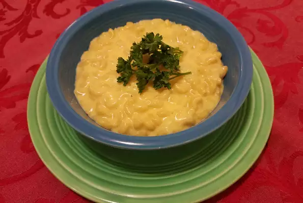

Mac and Cheese

Mac and Cheese Kids love it; easy to make. Also good if you add a cup of cubed cooked ham!
Ingredients
- ¼ cup butter
- 1 cup chopped onion
- 1 ½ tablespoons all-purpose flour
- 1 teaspoon salt
- 8 ounces macaroni
- 3 cups milk
- 1 ½ cups shredded Cheddar cheese
Steps
- Heat the butter in a skillet over medium heat. Stir in the onion; cook and stir until the onion has softened and turned translucent, about 5 minutes. Stir in flour and salt and cook, stirring constantly, for 2 minutes more.
- Add milk and macaroni to saucepan, and bring to a boil. Reduce heat and cover. Simmer for 15 minutes or until pasta is tender, stirring occasionally.
- Mix in cheese, and stir until cheese melts... Be Happy!!!!!!!!!!!
Back To Homer